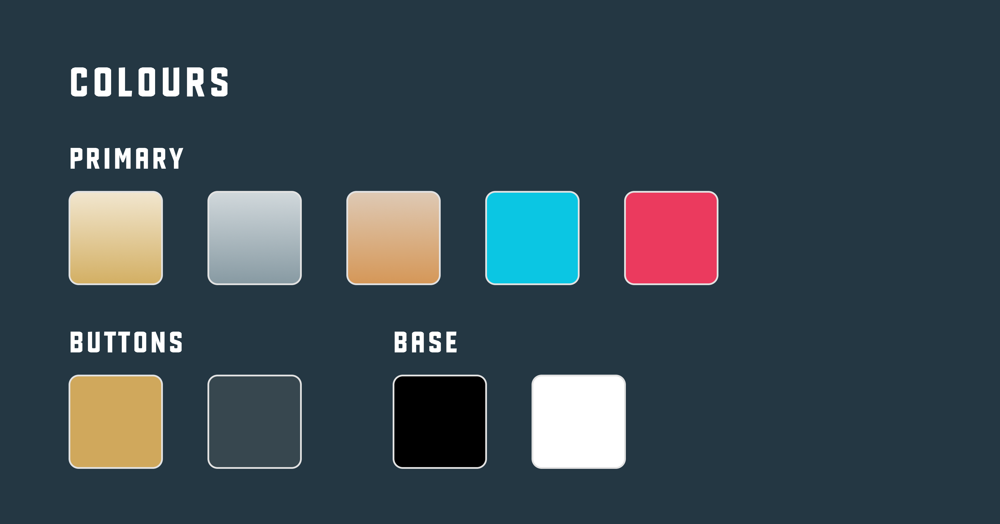
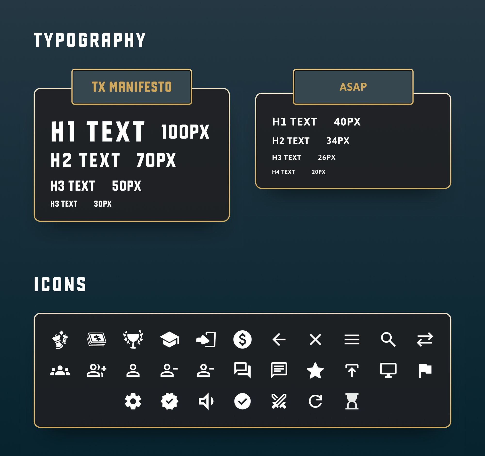
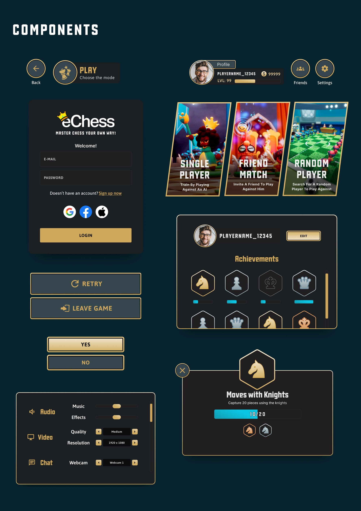
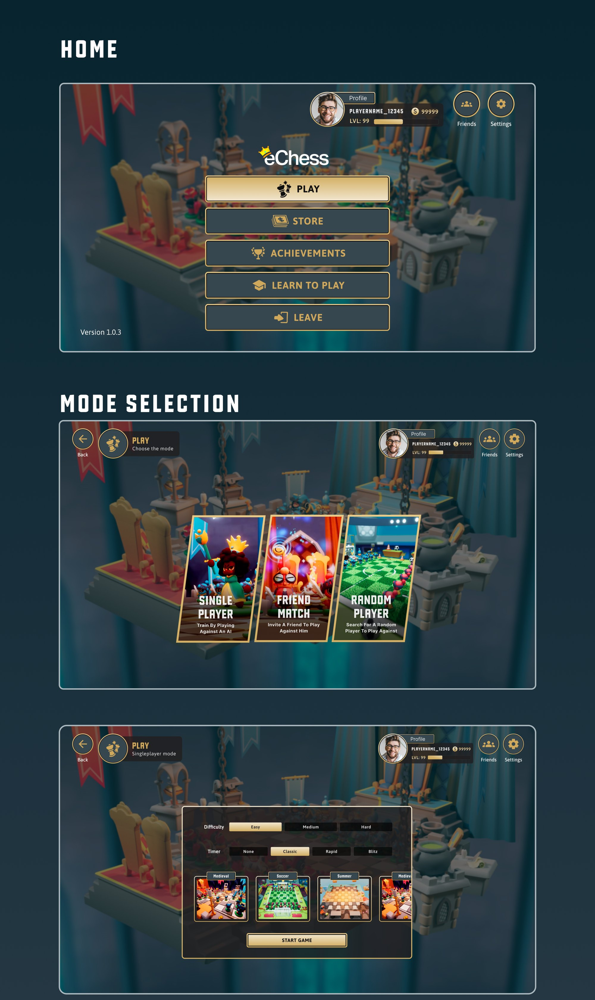
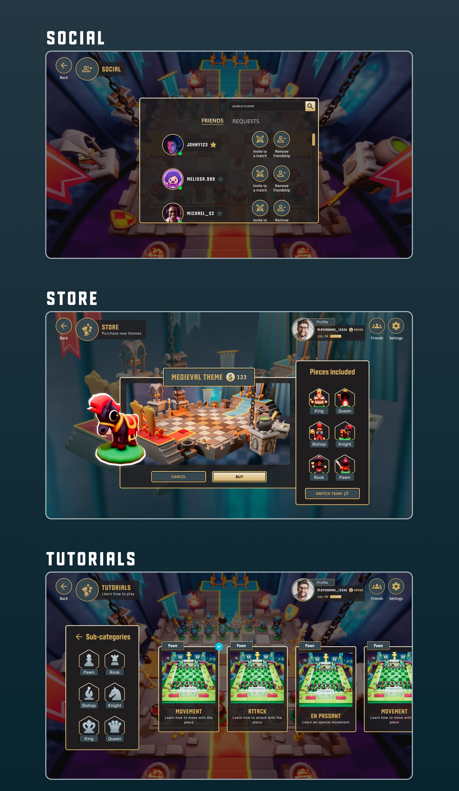
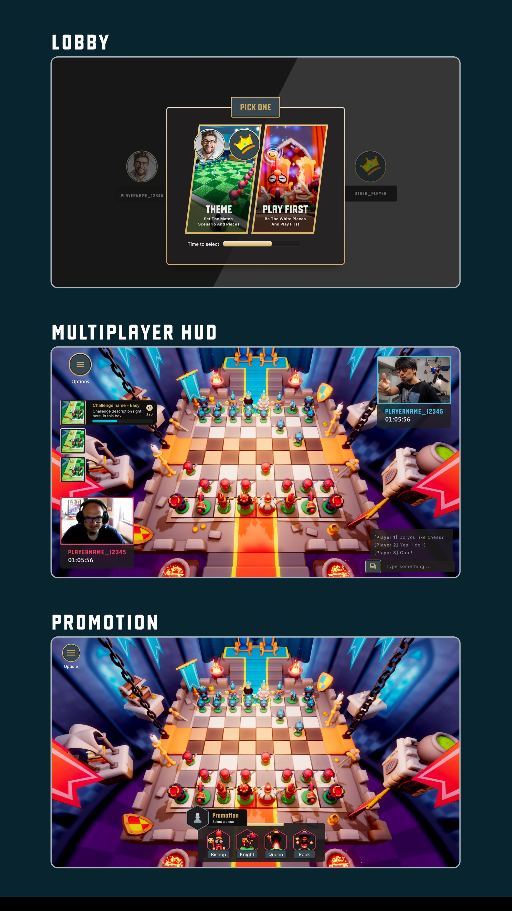

Interface para jogo de xadrez

Cliente e atuação
Atuei como UI/UX Designer na criação da interface completa do eChess, um jogo de xadrez digital desenvolvido por um estúdio em Oslo, Noruega, enquanto integrava a equipe da Performa_IT, consultoria de tecnologia.
O projeto envolveu o desenvolvimento de componentes de interface e o design de telas principais, como menu inicial, seleção de modos de jogo, área social, loja e configurações.
O foco foi criar uma experiência visual envolvente, funcional e consistente, adaptada ao público gamer e à identidade do produto. O resultado foi uma interface coesa, moderna e escalável, pronta para futuras atualizações do jogo.





